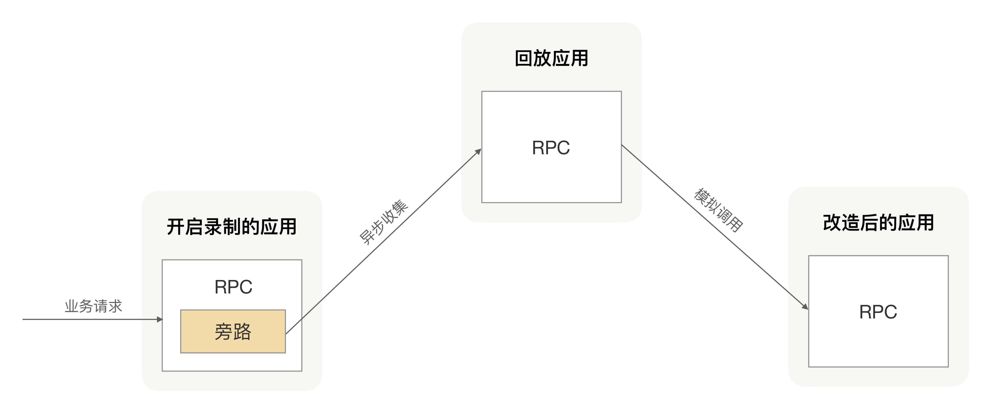

- 00 开篇词 别老想着怎么用好RPC框架，你得多花时间琢磨原理.md.html
- 01 核心原理：能否画张图解释下RPC的通信流程？.md.html
- 02 协议：怎么设计可扩展且向后兼容的协议？.md.html
- 03 序列化：对象怎么在网络中传输？.md.html
- 04 网络通信：RPC框架在网络通信上更倾向于哪种网络IO模型？.md.html
- 05 动态代理：面向接口编程，屏蔽RPC处理流程.md.html
- 06 RPC实战：剖析gRPC源码，动手实现一个完整的RPC.md.html
- 07 架构设计：设计一个灵活的RPC框架.md.html
- 08 服务发现：到底是要CP还是AP？.md.html
- 09 健康检测：这个节点都挂了，为啥还要疯狂发请求？.md.html
- 10 路由策略：怎么让请求按照设定的规则发到不同的节点上？.md.html
- 11 负载均衡：节点负载差距这么大，为什么收到的流量还一样？.md.html
- 12 异常重试：在约定时间内安全可靠地重试.md.html
- 13 优雅关闭：如何避免服务停机带来的业务损失？.md.html
- 14 优雅启动：如何避免流量打到没有启动完成的节点？.md.html
- 15 熔断限流：业务如何实现自我保护_.md.html
- 16 业务分组：如何隔离流量？.md.html
- 17 异步RPC：压榨单机吞吐量.md.html
- 18 安全体系：如何建立可靠的安全体系？.md.html
- 19 分布式环境下如何快速定位问题？.md.html
- 20 详解时钟轮在RPC中的应用.md.html
- 21 流量回放：保障业务技术升级的神器.md.html
- 22 动态分组：超高效实现秒级扩缩容.md.html
- 23 如何在没有接口的情况下进行RPC调用？.md.html
- 24 如何在线上环境里兼容多种RPC协议？.md.html
- 加餐 RPC框架代码实例详解.md.html
- 加餐 谈谈我所经历过的RPC.md.html
- 答疑课堂 基础篇与进阶篇思考题答案合集.md.html
- 结束语 学会从优秀项目的源代码中挖掘知识.md.html
- 捐赠
21 流量回放：保障业务技术升级的神器
你好，我是何小锋。上一讲我们学习了时钟轮在RPC中的应用，核心原理就一个关键字“分而治之”，我们可以把它用在任何需要高效处理大量定时任务的场景中，最具有代表性的就是在高并发场景下的请求超时检测。
回顾完上一讲的重点，我们就进入咱们今天的主题，一起看看流量回放在RPC里面的应用。
如果你经常翻阅一些技术文章的话，可能你会不止一次看到过“流量回放”这个词。我简单地介绍一下，所谓的流量就是某个时间段内的所有请求，我们通过某种手段把发送到A应用的所有请求录制下来，然后把这些请求统一转发到B应用，让B应用接收到的请求参数跟A应用保持一致，从而实现A接收到的请求在B应用里面重新请求了一遍。整个过程我们称之为“流量回放”。
这就好比今晚有场球赛，但我没空看，但我可以利用视频录播技术把球赛录下来，我随时想看都可以拿出来看，画面是一模一样的。
那在系统开发的过程中，回放功能可以用来做什么呢？
流量回放可以做什么？
我个人感觉，在我们日常开发过程中，可以专心致志地写代码、完成业务功能，是件很幸福的事儿，让我比较头疼的是代码开发完成后的测试环节。
在团队中，我们经常是多个需求并行开发的，在开发新需求的过程中，我们还可能夹杂着应用的重构和拆分。每到这个时候，我们基本很难做到不改动老逻辑，那只要有改动就有可能会存在考虑不周全的情况。如果你比较严谨的话，那可能在开发完成后，你会把项目里面的TestCase都跑一遍，并同时补充新功能的TestCase，只有所有的TestCase都跑通后才能安心。
在代码里面，算小改动的业务需求，这种做法一般不会出问题。但对于大改动的应用，比如应用中很多基础逻辑都被改动过，这时候如果你还是通过已有的Case去验证功能的正确性，就很难保证应用上线后不出故障了，毕竟我们靠自己维护的Case相对线上运行的真实环境来说还是少了很多。
这时候我们会向更专业的QA测试人员求助，希望他们能从QA角度多加入一些Case。但因为我们改动代码逻辑影响范围比较大，想要圈定一个比较确定的测试范围又很难，坦白讲这时候相对保险的方式就是QA把整个项目都回归测试一遍。这种方式已经是在最大程度上避免上线出问题了，但从概率角度上来讲也不是万无一失的，因为线上不仅环境复杂，而且使用场景也并不好评估，还有就是这种方式耗时也很长。
这就是我认为最让人头疼的原因，靠传统QA测试的方式，不仅过程费时，结果也不是完全可靠。那有没有更可靠、更廉价的方案呢？
传统QA测试出问题的根本原因就是，因为改造后的应用在上线后出现跟应用上线前不一致的行为。而我们测试的目的就是为了保证改造后的应用跟改造前应用的行为一致，我们测试Case也都是在尽力模拟应用在线上的运行行为，但仅通过我们自己的枚举方式维护的Case并不能代表线上应用的所有行为。因此最好的方式就是用线上流量来验证，但是直接把新应用上线肯定是不行的，因为一旦新改造的应用存在问题就可能会导致线上调用方业务受损。
我们可以换一种思路，我可以先把线上一段时间内的请求参数和响应结果保存下来，然后把这些请求参数在新改造的应用里重新请求一遍，最后比对一下改造前后的响应结果是否一致，这就间接达到了使用线上流量测试的效果。有了线上的请求参数和响应结果后，我们再结合持续集成过程，就可以让我们改动后的代码随时用线上流量进行验证，这就跟我录制球赛视频一样，只要我想看，我随时都可以拿出来重新看一遍。
RPC怎么支持流量回放？
那在实际工作中，我们该怎么实现流量回放呢？
我们常见的方案有很多，比如像TcpCopy、Nginx等。但在线上环境要使用这些工具的时候，我们还得需要找运维团队帮我们把应用安装到应用实例里面，然后再按照你的需求给配置好才能使用，整个过程繁琐而且总数重复做无用功，那有没有更好的办法呢？尤其是在应用使用了RPC的情况下。
在前面我们不止一次说过，RPC是用来完成应用之间通信的，换句话就是说应用之间的所有请求响应都会经过RPC。
既然所有的请求都会经过RPC，那么我们在RPC里面是不是就可以很方便地拿到每次请求的出入参数？拿到这些出入参数后，我们只要把这些出入参数旁录下来，并把这些旁录结果用异步的方式发送到一个固定的地方保存起来，这样就完成了流量回放里面的录制功能。
有了真实的请求入参之后，剩下的就是怎么把这些请求参数转发到我们要回归测试的应用里面。在RPC中，我们把能够接收请求的应用叫做服务提供方，那就是说我们只需要模拟一个应用调用方，把刚才收到的请求参数重新发送一遍到要回归测试的应用里面，然后比对录制拿到的请求结果和新请求的结果，就可以完成请求回放的效果。整个过程如下图所示：

相对其它现成的流量回放方案，我们在RPC里面内置流量回放功能，使用起来会更加方便，并且我们还可以做更多定制，比如在线启停、方法级别录制等个性化需求。
总结
保障线上应用的稳定，是我们研发同学每天都在努力耕耘的一件事，不管是通过应用架构升级，还是修复现有问题的方式。实际情况就是我们不仅要保障已有业务的稳定，还需要快速去完成各种新业务的需求，这期间我们的应用代码就会经常发生变化，而发生变化后就可能会引入新的不稳定因素，而且这个过程会一直持续不断发生。
为了保障应用升级后，我们的业务行为还能保持和升级前一样，我们在大多数情况下都是依靠已有的TestCase去验证，但这种方式在一定程度上并不是完全可靠的。最可靠的方式就是引入线上Case去验证改造后的应用，把线上的真实流量在改造后的应用里面进行回放，这样不仅节省整个上线时间，还能弥补手动维护Case存在的缺陷。
应用引入了RPC后，所有的请求流量都会被RPC接管，所以我们可以很自然地在RPC里面支持流量回放功能。虽然这个功能本身并不是RPC的核心功能，但对于使用RPC的人来说，他们有了这个功能之后，就可以更放心地升级自己的应用了。
课后思考
除了上面我提到的可以使用流量回放功能来验证改造后的应用逻辑，我们还可以用流量回放来做哪些有意义的事儿？
欢迎留言和我分享你的思考，也欢迎你把文章分享给你的朋友，邀请他加入学习。我们下节课再见！
© 2019 - 2023 Liangliang Lee. Powered by gin and hexo-theme-book.